عنوان ارائه:
آشنایی با داکر
استاد: مسعود قره جانلو
ارائه از: امین مستانی یزد
9 آبان 1396
فهرست:
- معرفی داکر
- مقایسه با مجازی ساز ها
- مقایسه مصرف منابع
- یک مثال برای PHP
- اشتراک منابع
- پشتیبانی از Clustering
- جمع بندی
- آموزش نصب
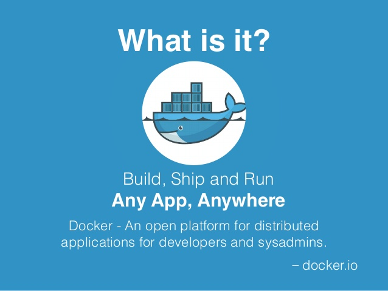
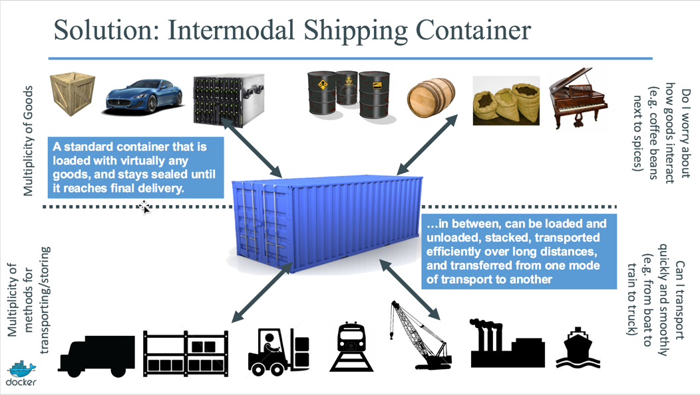
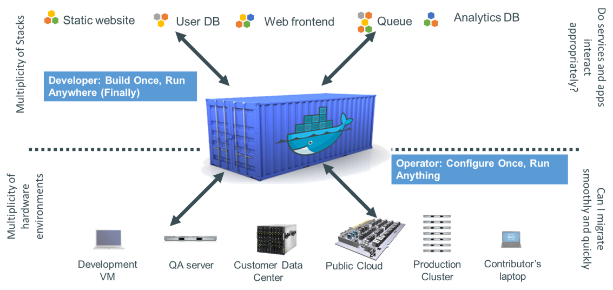
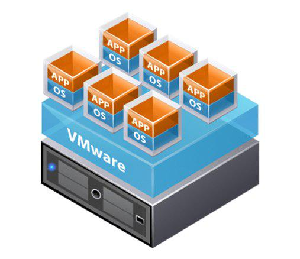
VMWare
What's
the
Difference?
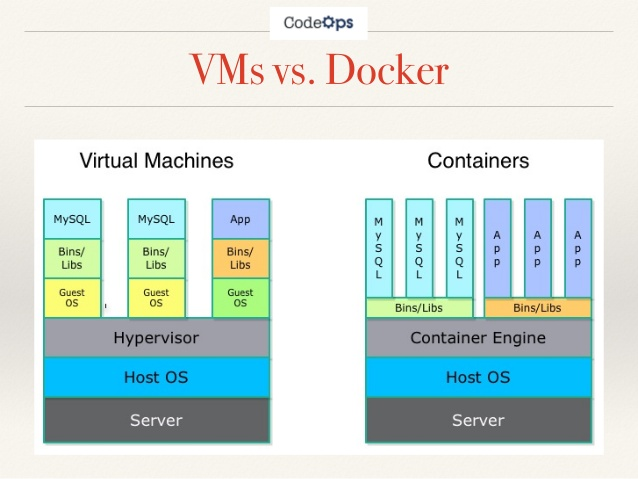
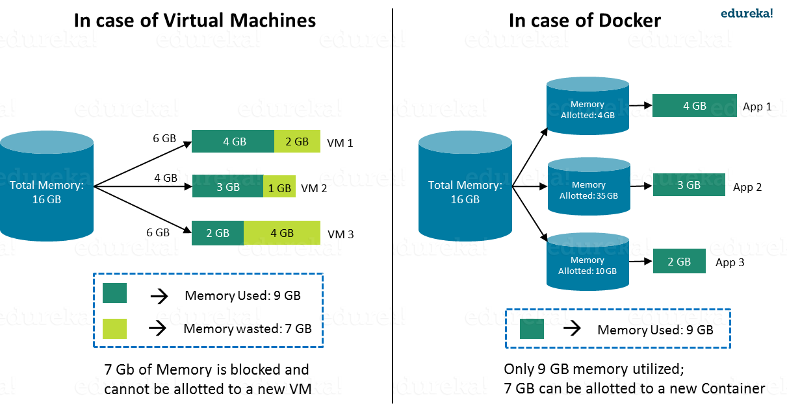
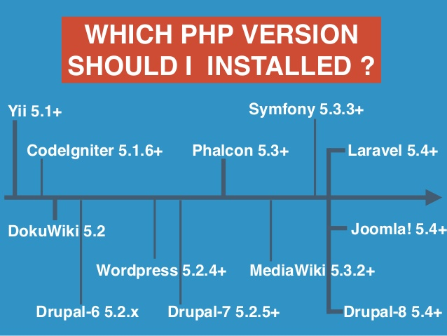
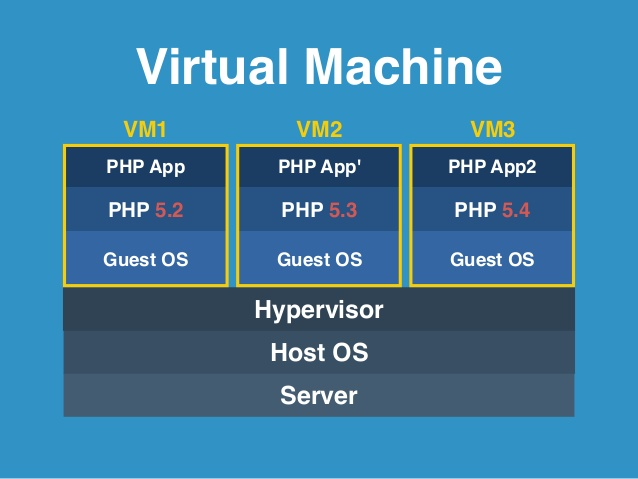
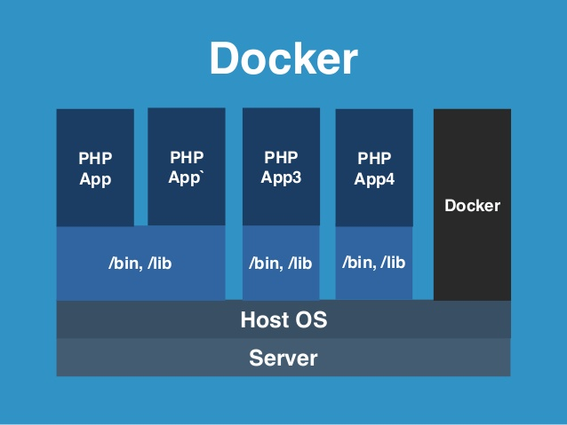
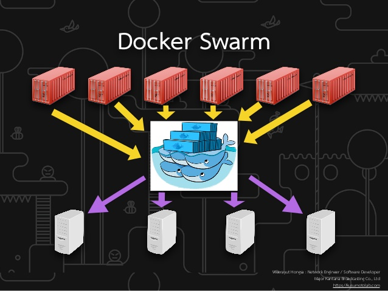
جمع بندی: چرا داکر ؟
- محیط پروژه را بنا به نیاز خودمون میسازیم.
- فضای هر پروژه از بقیه پروژه ها ایزوله شده است.
- در عین حال قابلیت اشتراک منابع رو داریم.
- پکیج ها پرتابل هستند.
- بسیار سریع تر و سبک تر از دیگر روش ها است.
"آموزش نصب" یا "چجوری بریم تو کارش؟"
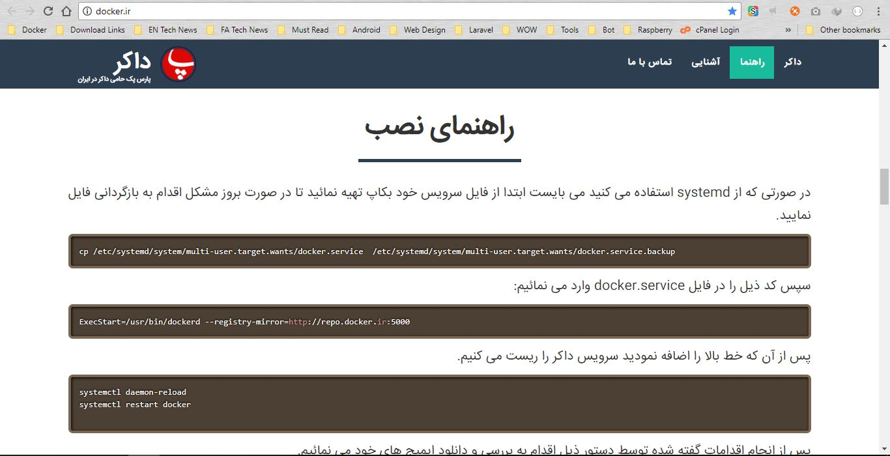
Docker.ir
Docker.com تحریم !؟
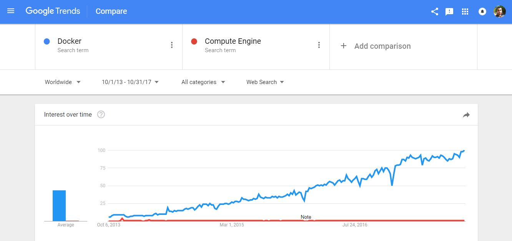
Any Questions?